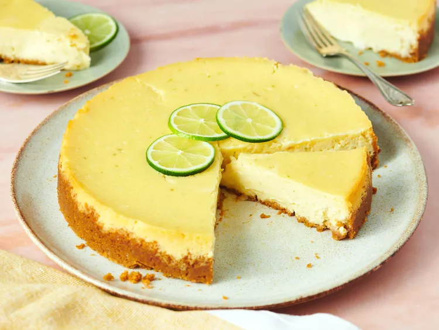

Desription
An easy-to-make, sweet-tart key lime cheesecake that stays creamy with a water bath.
Ingredients
- 1 ½ cups graham cracker crumbs
- 6 tablespoons butter, melted
- 24 ounces cream cheese, softened
- 1 cup white sugar
- 1 tablespoon grated lime zest
- 1 tablespoon cornstarch
- 3 large eggs
- ⅔ cup key lime juice
Steps
- Gather the ingredients.
- Combine graham cracker crumbs with butter. Press into the bottom and partially up the sides of a 9-inch springform pan; refrigerate while you prepare the filling.
- Preheat the oven to 300 degrees F (150 degrees C). Fill a shallow pan half full of hot water and place on the lower rack to minimize cracking.
- To make the filling: Beat cream cheese, sugar, lime zest, and cornstarch in a large bowl with an electric mixer until smooth and fluffy.
Beat in eggs one at a time, blending just until smooth. Add Key lime juice with mixer on low.
- Finish mixing by hand. Do not overbeat, or the cake will crack during baking. Pour batter into the prepared crust.
- Bake in the preheated oven for 55 to 65 minutes, or until set. Turn the oven off, and let cheesecake stand in the oven for 30 minutes with the door open at least 4 inches. Remove from oven.
- Refrigerate cheesecake 8 hours to overnight, and up to 3 days.
:max_bytes(150000):strip_icc():format(webp)/7441-key-lime-cheesecake-VAT-011-step-07-d716796ba05a4905a2d73f32bad55025.jpg)